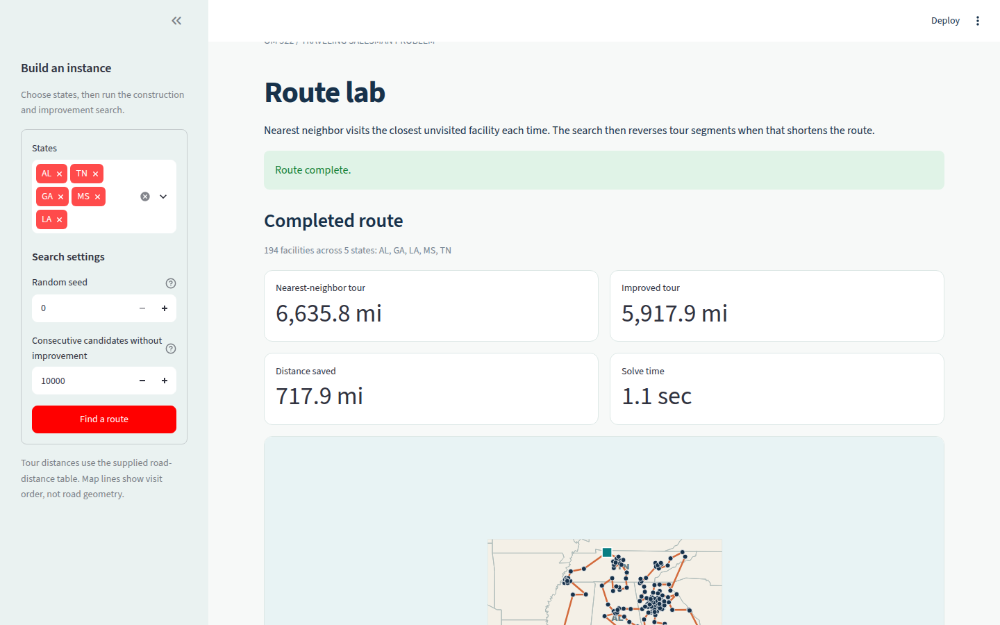
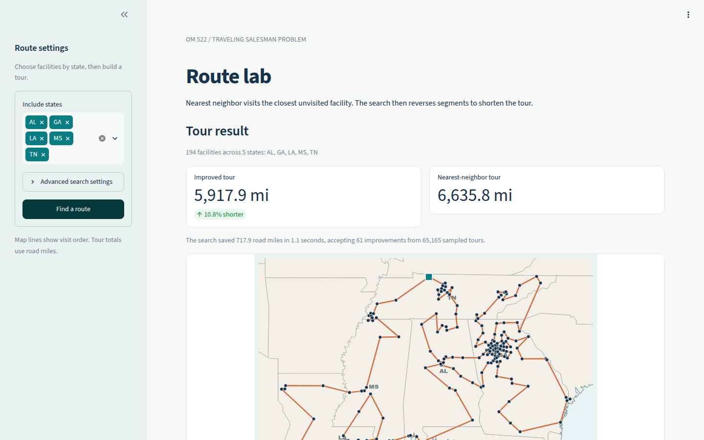

Route lab build and review
The work converted the existing notebook procedure into a local classroom app. A second review used Chrome screenshots and direct interaction to revise the layout after the first code-based review missed visual problems.
Build and correctness check
- The starting repo contained 439 locations, 192,721 ordered road distances, a marimo notebook, and 11 passing utility tests. The notebook chose the shortest nearest-neighbor tour across all starting facilities and then sampled subsequence reversals until 10,000 consecutive candidates failed to improve it.
- The initial build added an indexed solver and a Streamlit dashboard. The solver precomputes the distance matrix and ranked neighbors, evaluates symmetric reversal changes from four affected edges, and recalculates the full distance before accepting a move. The app provides state selection, adjustable seed and stopping limit, live progress, a local interactive map, and a distance-history chart.
- Two independent agents reviewed correctness and performance, each scoring its assigned dimension 4 out of 5. The correctness review found that the optimized reversal check required unique road pairs and a symmetric distance table. The loader now checks those properties. The performance review measured 0.795 seconds for the default 194-facility selection and 2.733 seconds for all 439 facilities. A proposed random-sampling optimization was left alone because the measured runtime was well inside the one-minute classroom target.
First visual and usability review
Two agents independently scored four dimensions from 1 to 5. The first review found a Streamlit duplicate-key error in the live chart. The main agent reproduced the error in AppTest, assigned unique keys to successive chart updates, and made the app test fail on displayed errors. The same revision added a short heuristic explanation, state labels, more room for the map legend, a two-column metric layout, and an ordered-stop table.
Bars show the mean across both agents and all four dimensions on a zero-to-five scale.
| Review | Agent | Clarity | Visual | Interaction | Classroom |
|---|---|---|---|---|---|
| First | Usability | 4 | 4 | 2 | 2 |
| First | Visual | 4 | 4 | 4 | 4 |
| Second | Usability | 5 | 4 | 5 | 4 |
| Second | Visual | 5 | 4 | 4 | 5 |
Each row records one independent agent score for its review.
| Dimension | First review mean | Second review mean |
|---|---|---|
| Clarity | 4.0 | 5.0 |
| Visual quality | 4.0 | 4.0 |
| Interaction | 3.0 | 4.5 |
| Classroom usefulness | 3.0 | 4.5 |
The second review found no serious blocker, and every dimension averaged at least 4. The agreed stopping rule ended the review after two rounds. Remaining suggestions were optional refinements: connect a selected stop to its map marker, position state labels more carefully, and add the closing return to the ordered table.
First effort: agent work and measurement
Four distinct subagents completed six review assignments: two correctness and performance checks, followed by two visual and usability checks in each of two rounds. The observed build-and-review window ran from the first solver file at 13:45:32 UTC to the recorded test and notebook checks at 13:59:27 UTC, a span of 13 minutes and 55 seconds. Total process time cannot be measured from the available timestamps because initial exploration and later report edits fall outside that window.
| Agent | Model | Work completed | Time evidence | Tokens |
|---|---|---|---|---|
| Main agent | Exact model unavailable | Implemented the app and solver, verified review findings, fixed the chart error, added tests, and compiled this report. | Observed build-and-review window: 13 minutes, 55 seconds. | Unavailable |
Correctness reviewer (correctness_review) | gpt-5.6-sol | Checked algorithm behavior, input assumptions, selection, and map projection. | Dispatched at 13:49:37 UTC. Full elapsed time unavailable. | Unavailable |
Performance reviewer (performance_review) | gpt-5.6-sol | Benchmarked both instance sizes and map generation. | Dispatched at 13:49:37 UTC. Reported about 35 seconds. | Unavailable |
Usability reviewer (ux_round1) | gpt-5.6-luna | Found the live-chart failure in the first review and verified its repair in the second. | Reviews dispatched at 13:51:26 and 13:55:53 UTC. Full elapsed time unavailable. | Unavailable |
Visual reviewer (visual_round1) | gpt-5.6-luna | Checked map and chart structure, legibility, interaction, and classroom layout in two reviews. | Reviews dispatched at 13:51:26 and 13:55:53 UTC. Reported 7.3 seconds of targeted checks in the second review. | Unavailable |
The agent runtime did not expose token counts or complete per-agent wall times. No token estimates were substituted for measured usage. The time entries distinguish recorded dispatch times from agent-reported check durations.
Checks after the first effort
pixi run test passed 22 tests, and pixi run check passed the existing marimo check. Streamlit AppTest completed the default route and an Arkansas run with changed settings without displayed errors. The ten-state run evaluated 206,149 candidates, accepted 178 improvements, and reduced the tour from 14,132.68 to 12,298.04 road miles in 3.02 seconds. Its map trace had 440 points, including the return to the first facility.
The connected browser inventory was empty during the first effort, so its visual review used AppTest and Plotly figure inspection without a rendered page. The second effort below addresses that limitation with local Chrome screenshots and interaction checks.
Second effort: browser review and revisions
The second effort inspected the loaded selection view, completed route, distance history, and 768-pixel layout in Chrome. The initial browser review found that the expanded sidebar crowded the narrow map, red controls competed with the orange tour, four large metric cards delayed the map, and the header text sat under Streamlit's toolbar. Browser interaction also exposed a map resize error: closing the sidebar expanded Plotly's axis ranges and reduced the route to a small region within the panel.
The revisions set a teal Streamlit theme, collapsed the sidebar automatically on narrow screens, moved advanced settings into an expander, and led the result with the improved distance and percent reduction. The map now constrains its drawing area while preserving geographic ranges, so it fills the available width after the sidebar closes. A shorter introduction, a labeled narrow-screen settings control, larger history-chart text, and a final-distance label completed the third review round. Chrome confirmed that the map's Zoom in control changes the x-axis range.
{kind=link}

{kind=link}

The revised 768-pixel result shows the wider map and the visible Route settings control.
{kind=link}
The plotted means are 2.875, 4.000, and 4.250 before rounding. Each mean combines two reviewers and four dimensions on a zero-to-five scale.
| Round | Reviewer | Clarity | Visual | Interaction | Classroom |
|---|---|---|---|---|---|
| Browser baseline | Classroom | 3 | 2 | 3 | 3 |
| Browser baseline | Design | 3 | 3 | 3 | 3 |
| Second | Classroom | 4 | 4 | 4 | 4 |
| Second | Design | 4 | 4 | 4 | 4 |
| Third | Classroom | 5 | 4 | 4 | 5 |
| Third | Design | 4 | 4 | 4 | 4 |
The third round found no blocker or remaining material issue. Dense facility clusters still require zoom or hover to inspect individual stops, which the map supports.
Second effort: agents and measurement
Two distinct subagents completed six visual review assignments across three rounds. The observed browser-to-final-check window ran from 14:05:20 to 14:20:25 UTC on 2026-09-22, a span of 15 minutes and 5 seconds. Initial turn setup falls outside that measured window. The runtime did not expose token counts or complete subagent wall times.
| Agent | Model | Work completed | Dispatch times (UTC) | Tokens |
|---|---|---|---|---|
| Main agent | Exact model unavailable | Inspected Chrome desktop and narrow views, tested route and map zoom interactions, implemented revisions, ran checks, and updated this report. | Observed browser-to-final-check window: 15 minutes, 5 seconds. | Unavailable |
Classroom reviewer (classroom_round1) | gpt-5.6-sol | Reviewed the teaching sequence, route comparison, and projection readability in all three rounds. | 14:07:38, 14:14:56, 14:17:40 | Unavailable |
Design reviewer (design_round1) | gpt-5.6-sol | Reviewed hierarchy, palette, responsive behavior, map scale, and chart readability in all three rounds. | 14:07:38, 14:14:56, 14:17:40 | Unavailable |
The agent names identify distinct subagents, and each of their three reviews is one assignment. Token usage is marked unavailable rather than estimated.
Final verification
pixi run test passed 22 tests, and pixi run check passed the notebook check after the browser revisions. Chrome displayed the default five-state route and its progress chart at desktop and 768-pixel widths. The map retained its geographic bounds after the sidebar closed, and Zoom in narrowed the x-axis range. The class-ready Parquet inputs were not changed.